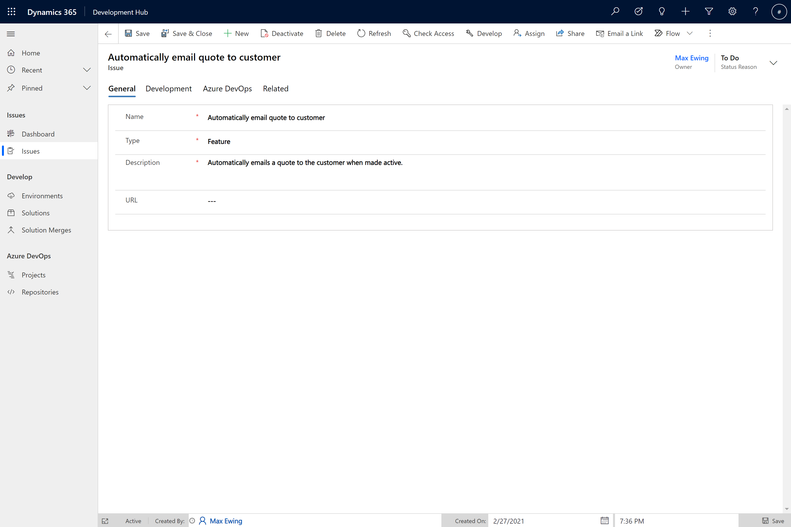

This lab will take you through the functionality of Development Hub and it's usage.
An Issue record must be created to begin working on a new feature or bug fix.
- To create an Issue, Navigate to the Issues sub area under the Issues area
- Click ‘New'
- You will then need to complete the following fields:
Tab | Field | Example Value | Explanation |
General | Name | Automatically email quote to customer | The name of the issue. |
General | Type | Feature | Either ‘Feature' or ‘Bug'. |
General | Description | Automatically emails a quote to the customer when made active. | A longer description for the issue. |
Azure DevOps | Work Item ID | 10001 | Used to link the commit to the correct Work Item in Azure DevOps |
- Click ‘Save'

In order to develop a solution to the Issue we created an unmanaged development solution is required. The unmanaged solution will be named using the name of the Issue.
- Clicking the ‘Develop' button in the command ribbon will trigger the creation of the unmanaged solution and set the status of the Issue to ‘In Progress'.
- Open the Power Platform Maker Portal and select the environment which Development Hub is installed. To change environment you select the Environment dropdown in the top right corner of the portal.

- Select ‘Solutions' from the navigation panel on the left side of the portal. This will display all the solutions installed into the environment. You will see a solution with a display name that matches the name given to the issue you created earlier. Clicking the display name will open the solution which will be empty.
- This is where you can add new and existing artifacts to your solution and make changes needed to resolve the Issue.

Example - Add a new table
- To add a new table, select the + New button in the toolbar and select Table from the dropdown list.
- This opens a pane on the right side of the portal where you can define the properties of the new table.

- Once the table is created you will see a list of the standard Dataverse columns. You can now add further customisations to the table.
Recommended steps to complete before requesting a merge
- Run any potentially impacted tests locally against the development environment. This allows early identification of any issues that may have been introduced and is the optimum time to find and resolve issues.
- If you are making code changes, raising a draft pull request so team members can give feedback is useful. This means your code review takes place outside of the solution merge process. If the code review happens during the merge process and issues are found then this will block other solution merges until you PR is approved.
To add your changes to the master solution and have them deployed into the other environments you need to create a Solution Merge.
- Open the Development Hub app, and navigate to the Issue. Select the Development tab where you will see a view called Solution Merges. Click + New Solution Merge
- The Quick Create: Solution Merge pane will be displayed on the right side of the portal.

Field | Example | Explanation |
Issue | Automatically email quote to customer | Link to the related solution. This will already be populated. |
Target Solution | ALMLAB ALM_Core | The solution to merge the changes into. |
Manual Merge Activities | No | If set to Yes then the merge process will pause once your development solution has been installed to the Master environment. Once manual activities have been completed the process will continue. |
Source Branch | Empty | Adding a Branch name here will merge that branches changes into the Pull Request branch that is created in ADO. Used to include code and test files in the same PR as the customisations. |
- You will now see a record in the Solution Merges view for the merge record you created.

- Select the record and click Edit or double click the row to open the Solution Merge form. You can now copy the URL and send it to someone to review and Approve.
To start the process of merging the developed changes into the master solution the Solution Merge record must be approved. On a project you would ask another team member to review your solution merge. When reviewing a merge some of the things to look out for are:
- Does the solution contain everything it would need to allow a merge to be successful. For example Dependencies, Plugin Steps etc.
- Does the solution contain items that it does not need. For example when adding an existing Table to your solution, did all the components unexpectedly get included?
- Open the solution merge form and click Approve in the toolbar. This will change the Status Reason from Awaiting Review to Approved

- If there are no solution merges in progress then the status reason will change to Merging. If another merge is in progress then it will be set to Queued. Queued solution merges will start as soon as the merges ahead of it have been complete.
- If the solution merge fails for any reason the Status Reason will be set to Failed. Details of the error will be added to the Timeline.
- Once a solution has been merged into master it is extracted into a branch with the same name as the Issue and A Pull Request is raised in Azure Devops with a link to the Work Item ID that was set on the Issue. The Status Reason of the solution merge is set to Awaiting PR Merge.
The customisations have now been extracted into the Git repository and a Pull Request has been created ready for review. To view the PR, open the Azure Devops (ADO) project, expand the Repos section of the navigation on the left of the portal and select Pull requests. Select the Active tab and you will see the PR related to your changes. Click on the PR to open up the details.

The Overview tab contains the details of a PR such as required checks that must be completed before a PR can be completed, a list of required and optional reviewers and and comments that have been made. There is also a Work items section where you will see a link to the work item linked to the Dev Hub Issue.

Select the Files tab to view all of the files that have been changed as part of this PR. This is where you can make comments against lines of code which the owner of the PR will be notified about.

Approving the PR
- When you have checked the changes you approve the PR using the Approve button at the top right of the page.

- Once all of the required checks have been successful you will be able to complete the PR using the Approve button.

- You will then see a Complete pull request dialog where you can select merge type and post completion options. You do not need to change any of the default settings. Selecting Complete merge will merge the PR branch into the Master branch and start the process of releasing the changes to the CI environment.